Before you start Chapter 11¶
Before you start · Chapter 11 — Skirts, panels, Clicky-Clack door, filtration
This chapter closes the machine. First come the skirt ring with its front touchscreen module, the electronics-bay fans, the bottom panel, the Z belt covers, the Nevermore Micro V5 Duo filter and the spool holder. Then, after Ch 13 has proved the machine moves and heats, come the filter's cartridge, the back, side and top panels and the Clicky-Clack door.
What you're building in this chapter: Five sub-assemblies enclose the open frame. The skirt ring is twelve printed segments around the base that close the electronics bay. It carries the blue belt guards over the four Z drive belts, the two 60 × 20 mm bay fans (both in the right-hand fan support, beside the PSU), the keystone panel with the network socket, the AC inlet segment from Ch 09 and, front centre, the BTT TFT4.3 touchscreen module. The bottom panel is a door: stuck with VHB to two rear hinges and four clips, it swings down, so the bay stays reachable through Ch 13. Four Z belt covers clip over the belts at the frame corners. The Nevermore Micro V5 Duo is a carbon filter that cleans the chamber air in a loop: a printed plenum, two 5015 blowers and a magnetic cartridge inside the chamber. Then the panels: back and top on 1 mm foam and 4 mm clips, sides on 3 mm foam and 6 mm clips. Last, the Clicky-Clack door: framed acrylic on lift-off hinges with a magnetic handle and latch. Everything from the back panel on waits until Ch 13 has run the machine with every face open.

Time: 4.0–6.0 h hands-on, first build (survey §5.1, P11). That splits into about 3.0–4.0 h for Part A (before Ch 13) and 1.0–2.0 h for Part B (after Ch 13). Part C fits the side spool holder and the camera in about 1 h 40 min hands-on; their parts print in the run, as batch B12.
Sessions: 16 × ~30 min (11 in Part A, 5 in Part B), or 19 with Part C. Every minute figure in this chapter is a first-build estimate, worked out from the Time split and the step count.
Prerequisites:
- Ch 10 (Wiring) is complete, including Checkpoint 10: LDO's Checkpoint #1 and the dead meter sweep (multimeter, unplugged). This is a hard gate: once the skirts and bottom panel go on, the bay is closed, and opening it again costs an hour (survey §5.2 W8).
- Ch 10 has also finished the LED routing and the extrusion covers. A skirt over an LED wire that is not yet routed has to come off again (survey §5.2 W5).
- Ch 12 Part 2 is complete, from Step 12.11 to Checkpoint 12: the bay powered once, both MCUs flashed,
printer.cfgin. It runs with the bay open, before this part closes it. The touchscreen module (11.5–11.6) was already built at Ch 10 Step 10.50, and its screen proved at 12.11. - Print batch B08: skirts and front modules (5 plates, 26.5 h).
- Print batch B09: panels, filtration and spool (5 plates, 20.7 h).
- Print batch B10: the Clicky-Clack door (1 plate, 5.7 h), plus
Handle.stlfrom B02. - Print batch B02: the blue accent parts used here: belt guards, fan grills, fan grill retainers, keystone blank, TFT faceplate and the Clicky-Clack handle.
- Print batch B07:
handlebar_spacer_x4, used at the top panel in step 11.60. - Print batch B11: the DC loop lids for 11.52 (bin 11-lids-DC; P4 and P5 print after the kit-day bay measurements).
- Print batch B12: side spool holder and camera (3 plates, 15.8 h), for Part C only.
- Part B also needs Ch 13 (Initial startup), and the Ch 06b gantry-squaring pass that runs inside it. Do not close the machine before both pass.
- Part C also needs Part B, B12's bins 11-side-spool and 11-camera, and, for the camera, the USB cable laid at Ch 10 Step 10.81. Step 11.68 checks that the printed frame suits this machine's panel stack; only a stack over 6.2 mm sends Step 11.69 back to the Core One+ for a frame reprint.
Tools
- Hex keys 2, 2.5, 3 and 4 mm.
- Nutopress Pro insert press with its M3 tip, for the skirts, fan grill retainers, Nevermore, Clicky-Clack latch and exhaust cover. Use the X-Tronic iron with the LDO brass tip only for a part that will not fit under the press. Whether each part reaches the tip is
(verify on bench). - Soldering iron and solder for the Nevermore bridge PCB, and a multimeter for the short check.
- Small hammer, for the Clicky-Clack dowel pins and split bushings.
- Side cutters or flush cutters, for the 5015 fan housings and the rubber retainer strip.
- Sharp scissors or a craft knife, for the foam tape, the VHB and the gasket mitres.
- 150 mm steel rule and a machinist square, for the door frame corners.
- A flat reference surface (the stone counter), to check every skirt segment for rock.
- Part C only: digital caliper, a PTFE cutter or a sharp blade, and the laptop with Mainsail open.
Consumables: 1 mm foam tape, 3 mm foam tape, 3M VHB tape, super glue (for the magnets), IPA and a lint-free cloth, blue tape (to hold the door while you hang it), and threadlocker (optional, for the hammerhead quick-release trick).
Read first
- Start only after Checkpoint 10 has passed and Ch 12 Part 2 is done. The skirt ring and the bottom panel close the electronics bay, and Ch 12 Part 2 needs it open. Opening it again costs an hour, plus the risk of having skipped the safety check.
- Only Part A happens now. The back, side and top panels and the door go on in Part B, after Ch 13: the startup wizard's motor, endstop and probe checks and the Ch 06b gantry squaring all need the machine open on every face.
- Three stock assemblies are replaced, and their manual pages skipped. The Clicky-Clack replaces the stock front doors (the front skirts still go on), the BTT touchscreen replaces the mini12864 display, and the Nevermore replaces the stock exhaust filter. LDO's exhaust cover seals the back panel's cut-out instead: grill inside, cover outside, and the filament tube through the coupler in its centre. Decide that now, because a back panel sealed the wrong way comes off again and a part gets reprinted.
- Caliper the deck panel before the ring goes on. LDO's documents disagree about its thickness (the note under the tables below has both), and if Ch 02 fitted the wrong deck supports, you fix that now.
- Check every skirt segment on the flat reference before you fit anything.
rear_center_skirt_350is 182 mm long and the part most likely to warp in the whole build, and a bowed skirt is the most visible fault on a finished Voron.
For reference: hardware totals, sources and video
Printed parts (chapter totals; batch ids from docs/voron-print-plan.md)
Parts arrive in the bins named below (see the bin map in print/README.md#bins); check the bin label's list before you start.
| Looks like | STL | Bin | Qty | Colour | Batch |
|---|---|---|---|---|---|
 |
rear_center_skirt_350.stl |
11-skirts | 1 | Black | B08 |
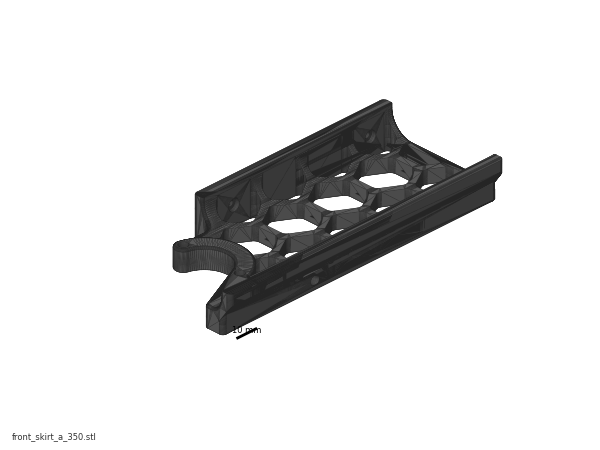 |
front_skirt_a_350.stl |
11-skirts | 1 | Black | B08 |
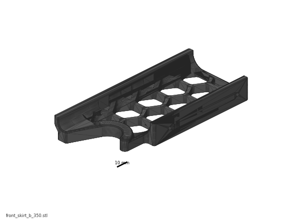 |
front_skirt_b_350.stl |
11-skirts | 1 | Black | B08 |
 |
side_skirt_a_350_x2.stl |
11-skirts | 2 | Black | B08 |
 |
side_skirt_b_350_x2.stl |
11-skirts | 2 | Black | B08 |
 |
side_fan_support_x2.STL |
11-skirts | 2 | Black | B08 |
 |
keystone_panel.stl |
11-skirts | 1 | Black | B08 |
 |
power_inlet_IECGS_1mm.stl |
09-bay | 1 | Black | B07-P1 (fitted in Ch 09 Steps 09.10–09.12; listed here because it is a ring segment) |
 |
mount.stl (BTT Pi TFT4.3 Mount) |
10-tft | 1 | Black | B08 |
 |
[a]_faceplate.stl (BTT Pi TFT4.3 Mount) |
10-tft | 1 | Blue | B02 |
 |
[a]_belt_guard_a_x2.stl |
11-fans | 2 | Blue | B02 |
 |
[a]_belt_guard_b_x2.stl |
11-fans | 2 | Blue | B02 |
 |
[a]_fan_grill_a_x2.stl |
11-fans | 2 | Blue | B02 |
 |
[a]_fan_grill_b_x2.stl |
11-fans | 2 | Blue | B02 |
 |
[a]_fan_grill_retainer_x2.stl |
11-fans | 2 | Blue | B02 |
[a]_keystone_blank_insert.stl |
11-skirts | 2 (1 used, 1 spare) | Blue | B02 | |
 |
ldo_bestagon_insert.stl |
11-skirts | 1 (optional trim) | Blue | B02 |
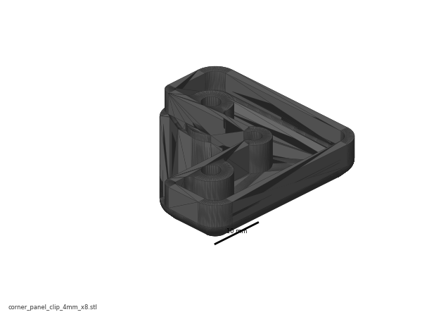 |
corner_panel_clip_4mm_x8.stl |
11-clips-4mm | 8 | Black | B09 |
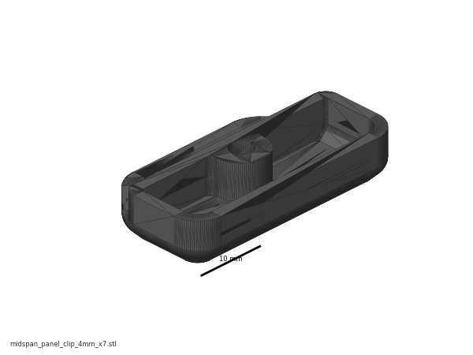 |
midspan_panel_clip_4mm_x7.stl |
11-clips-4mm | 7 | Black | B09 |
 |
corner_panel_clip_6mm_x8.stl |
11-clips-6mm | 8 | Black | B09 |
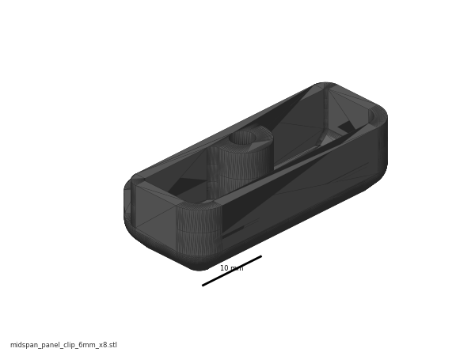 |
midspan_panel_clip_6mm_x8.stl |
11-clips-6mm | 8 | Black | B09 |
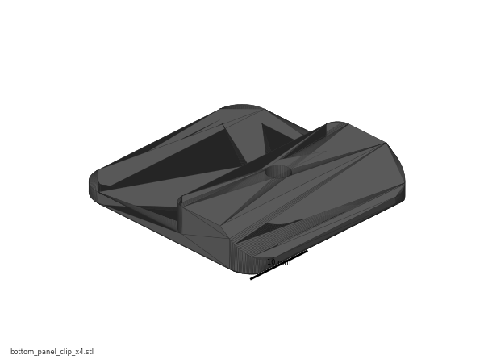 |
bottom_panel_clip_x4.stl |
11-panels | 4 | Black | B09 |
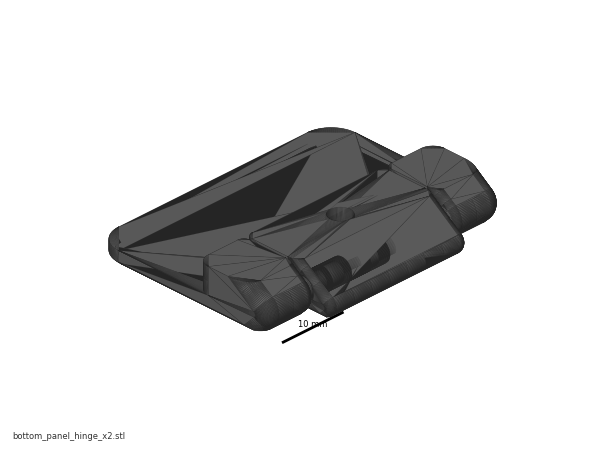 |
bottom_panel_hinge_x2.stl |
11-panels | 2 | Black | B09 |
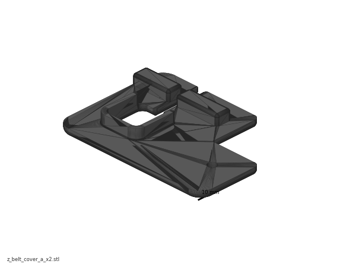 |
z_belt_cover_a_x2.stl |
11-panels | 2 | Black | B09 |
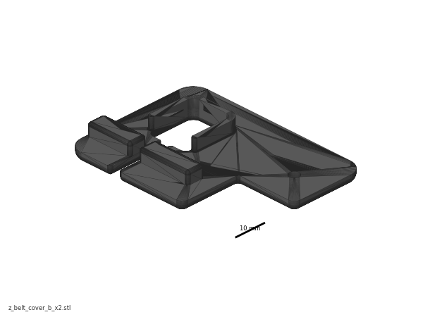 |
z_belt_cover_b_x2.stl |
11-panels | 2 | Black | B09 |
z_belt_cover_a_led.stl (LDO) |
— | 0 | Black | not printed — Ch 10 Step 10.38 routes the LED lead through the extrusion slot, not the Z-motor opening; see 11.22 for the rejected alternative | |
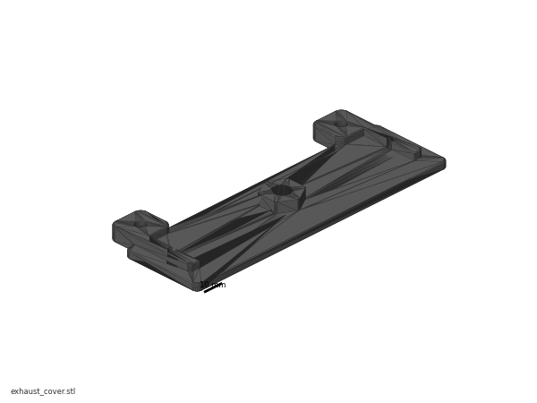 |
exhaust_cover.stl (LDO) |
11-finish | 1 | Black | B09 |
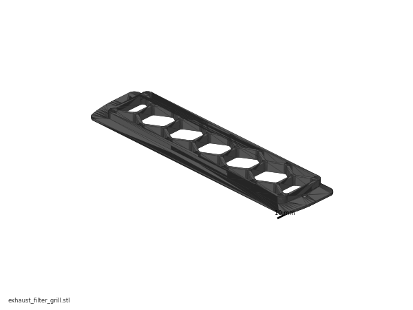 |
exhaust_filter_grill.stl (Voron) |
11-finish | 1 | Black | B09 |
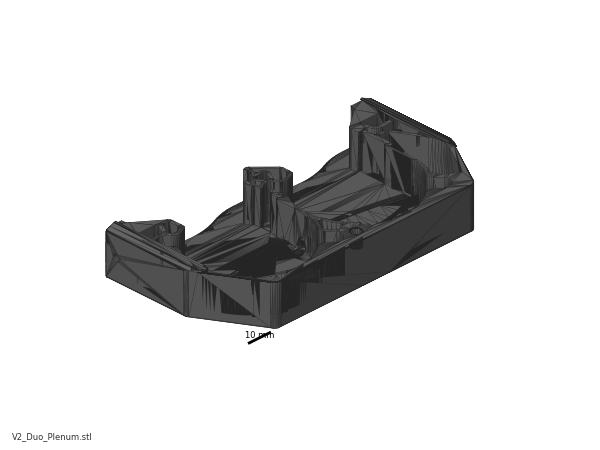 |
V2_Duo_Plenum.stl |
11-nevermore | 1 | Black | B09 |
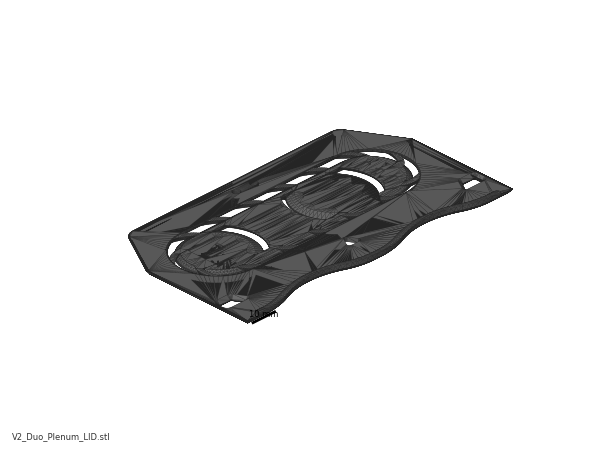 |
V2_Duo_Plenum_LID.stl |
11-nevermore | 1 | Black | B09 |
 |
Regular_Cartridge(contributed_by_Bucknova).3mf |
11-nevermore | 1 | Black | B09 |
 |
Regular_Cartridge_Lid(contributed_by_Bucknova).3mf |
11-nevermore | 1 | Black | B09 |
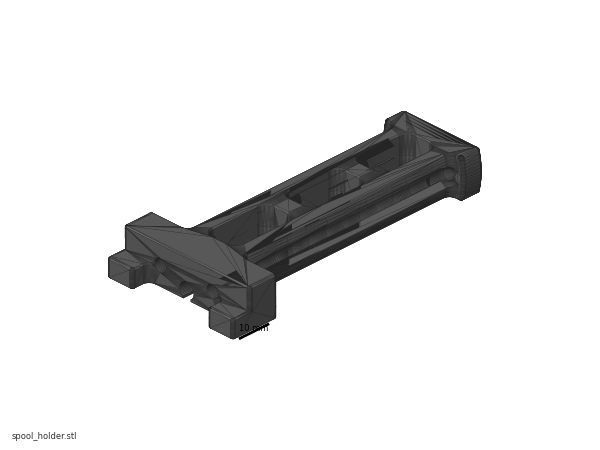 |
spool_holder.stl |
11-spool | 1 | Black | B09 |
 |
bowden_retainer.stl |
11-spool | 1 | Black | B09 |
handlebar_spacer_x4.stl (LDO) |
11-finish | 4 | Black | B07 | |
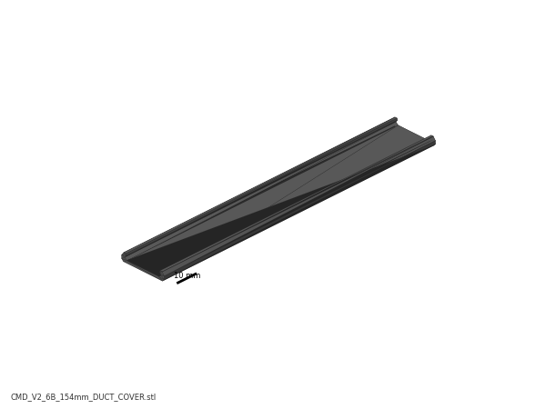 |
DC loop lids, step 11.52: CMD_V2_6B_154mm_DUCT_COVER.stl ×2, CMD_V2_6B_90DEG_COVER.stl ×2, V2L_90DEG_COVER_MIRROR.stl, V2L_58mm_DUCT_COVER.stl ×3, V2L_130mm_DUCT_COVER.stl, V2L_70mm_DUCT_COVER.stl, CMD_Remix-V3_DUCT-2B_45deg_LID.stl ×2, V3L_10mm_DUCT_COVER.stl, V3L_154N_DUCT_COVER.stl ×2, V3L_T_REG_N_COVER.stl ×2 |
11-lids-DC | 17 | Black | B11 |
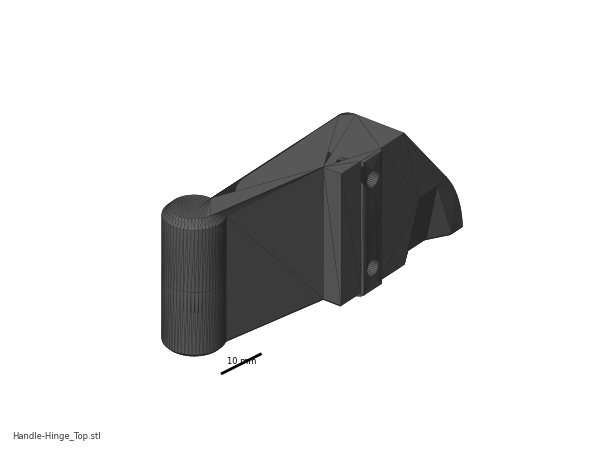  |
Handle-Hinge_Top.stl / Handle-Hinge_Bottom.stl |
11-door | 1 each | Black | B10 |
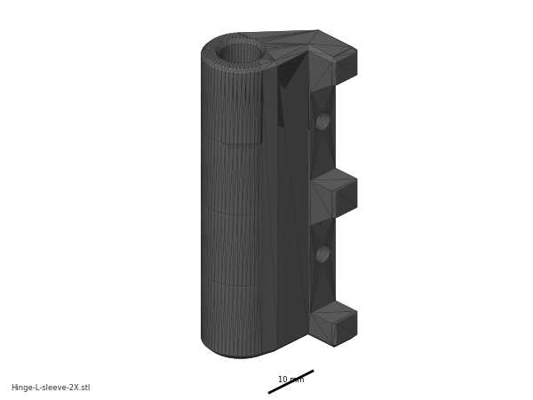  |
Hinge-L-sleeve-2X.stl / Hinge-L-solid-2X.stl |
11-door | 2 each | Black | B10 |
 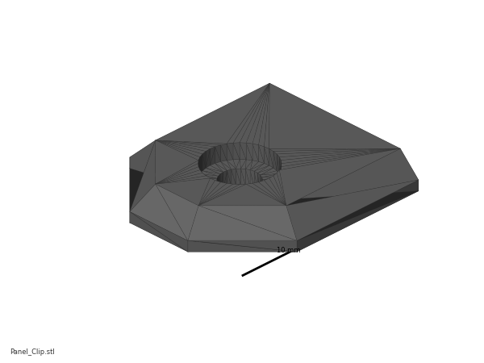 |
Latch.stl / Panel_Clip.stl |
11-door | 1 each | Black | B10 |
 |
Handle.stl (Clicky-Clack) |
11-door | 1 | Blue | B02 |
 |
side_spool_frame_puck.stl (Part C, remix of Printables 608769) |
11-side-spool | 1 | Black | B12-P1 (reprinted at 11.69 only if the stack is over 6.2 mm) |
 |
Bowden Tube Holder_Long.stl (Part C, Printables 608769) |
11-side-spool | 1 | Black | B12-P2 |
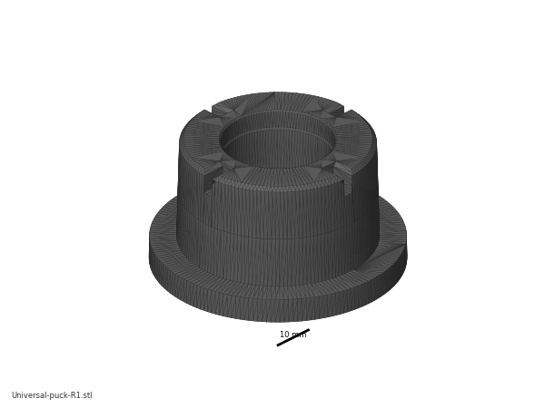 |
Universal-puck-R1.stl (Part C, Printables 1605113) |
11-side-spool | 1 | Blue | B12-P3 |
 |
Universal-spoolholder-1kg-R1.stl (Part C, Printables 1605113) |
11-side-spool | 1 | Blue | B12-P3 |
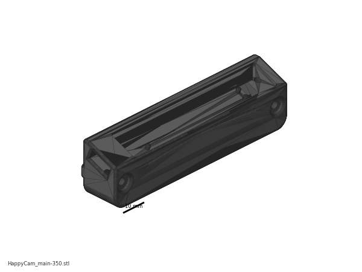 |
HappyCam_main-350.stl (Part C, Printables 527904) |
11-camera | 1 | Black | B12-P2 |
 |
HappyCam_cover_with_light.stl (Part C, Printables 527904) |
11-camera | 1 | Black | B12-P2 |


Part C parts come off batch B12, the last three plates of the ASA run, into bins 11-side-spool and 11-camera. Step 11.69 reprints the frame only if Step 11.68 measures a panel stack over 6.2 mm.
Not printed, not installed — the Clicky-Clack replaces the stock front doors and the BTT touchscreen replaces the mini12864, so none of these exist on this machine: Panel_Mounting/Front_Doors/door_hinge_x6, handle_a_x2, handle_b_x2, latch_x2; LDO's whole LDO Door/ set; mini12864_case_front, mini12864_case_rear, [a]_mini12864_case_hinge, [a]_mini12864_case_front_insert, [a]_btt_knob_light_shield. The stock exhaust housing set, exhaust_filter_housing, [a]_exhaust_filter_mount_x2, [a]_filter_access_cover and [a]_exhaust_fan_grill, is printed in batch B13 but not fitted here: it waits in bin 14-exhaust for Ch 14 Part H. Manual pages p.211, p.214–216, p.220–221, p.245–249 and p.250–253/256 are therefore dead pages for this build (print plan §7); p.250–253/256 come back in Ch 14 Part H.
Hardware (chapter totals)
| Fastener / part | Qty | Where |
|---|---|---|
| M3×8 SHCS | 20 | skirt ring: belt guards 8, two each (p.217, p.222); front skirts 4 (p.219); rear run 4 (p.223–224); side skirts 4 (p.227, p.230) |
| M3×8 SHCS | 16 | bay-fan grills, four each: 8 into the fans (p.228), 8 into the grill retainers (p.225) |
| M3×8 SHCS | 5 | BTT TFT4.3 mount and faceplate (mount README) |
| M3×8 SHCS | 6 | bottom-panel clips and hinges, into the skirts' heat-set inserts, no T-nuts (p.233, CAD) |
| M3×8 SHCS | 1 | bowden retainer (p.257) |
| M3×8 SHCS | 11 | back-panel clips: two per corner clip, one per midspan (p.239) |
| M3×8 SHCS | 12 | top-panel clips: two per corner clip, one per midspan (p.243) |
| M3×12 SHCS | 24 | side-panel clips, 12 per side: two per corner clip, one per midspan (p.241) |
| M3×12 SHCS | 2 | exhaust grill to exhaust cover, into its two inserts (p.254, exhaust_cover STL) |
| M3×12 SHCS | 2 | Nevermore plenum to the bed extrusions |
| M3×6 BHCS | 4 | Z belt covers (p.234) |
| M3×20 SHCS | 8 | Part C: puck to frame 4, frame to the extrusions 2 (slicer/addons/side-spool-608769/remix.scad), HappyCam body 2 (14.96 mm of plastic under the head, read from the Printables 488020 STL) |
| M3×8 SHCS | 2 | Part C: tube holder 1, HappyCam light cover 1 |
| M3 roll-in T-nut, 2020 | 4 | Part C: side spool frame 2, HappyCam body 2 |
| M3×6 BHCS | 2 | Nevermore plenum lid and cartridge lid (LDO's optional M3×4 BHCS is not a kit row) |
| M3 hammerhead T-nut, 2020 | 47 | panel clips: 11 back, 24 side, 12 top (p.239, p.241, p.243) |
| M3 hammerhead T-nut, 2020 | 4 | Z belt covers (p.234) |
| M3 hammerhead T-nut, 2020 | 1 | bowden retainer (p.257) |
| M3 hammerhead T-nut, 2020 | 1 | Part C tube holder: its two pegs leave 12 mm, too short for a roll-in |
| M3 roll-in T-nut, 2020 | 3 | BTT TFT4.3 mount |
| M3 roll-in T-nut, 2020 | 12 | skirt ring: 4 front (p.218), 4 rear (p.222), 2 per side (p.226, p.229) |
| M3 roll-in T-nut, 2020 | 2 | Nevermore plenum |
| M3 heat-set insert, brass M3×5×4 | 11 | skirt segments: three in each front skirt and the keystone panel, one in each fan support (p.212) |
| M3 heat-set insert, brass M3×5×4 | 16 | bay fans and grill retainers, four each (p.213) |
| M3 heat-set insert, brass M3×5×4 | 6 | Nevermore: 4 in the two fans' mounting holes, 1 plenum, 1 cartridge (LDO guide) |
| M3 heat-set insert, brass M3×5×4 | 2 | exhaust cover, for the grill screws (exhaust_cover STL) |
| M5×10 BHCS | 2 | fan supports to the frame (p.227, p.230) |
| M5×10 BHCS | 2 | exhaust cover tabs to the top rear extrusion (p.255, exhaust_cover STL) |
| M5×16 BHCS | 1 | spool holder arm (p.259) |
| M5×14 BHCS | 4 | aluminium handlebars (LDO extra, not in the manual) |
| M5 roll-in T-nut, 2020 | 1 | spool holder (p.259) |
| M5 roll-in T-nut, 2020 | 2 | fan supports (p.226, p.229) |
| M5 roll-in T-nut, 2020 | 2 | exhaust cover tabs, top rear extrusion back slot (p.254) |
| M5 hammerhead T-nut, 2020 | 4 | aluminium handlebars |
| 60×60×20 fan | 2 | bay fans: inserts at 11.3, into the right-hand support at 11.11, plugged into the Ch 10 splicer at 11.16 |
| 4.3" capacitive DSI display | 1 | the BTT Pi TFT4.3, into its mount at 11.6 |
| 5015 fan, Nevermore | 2 | the kit's "Nevermore Micro V5 Parts" bag |
| Nevermore bridge PCB | 1 | the kit's "Nevermore Micro V5 Parts" bag |
| 4mm Bowden Coupler | 1 | exhaust cover centre hole, the PTFE's way through the back panel (11.54) |
| 6×3 mm neodymium magnet | 8 | Nevermore: 4 plenum, 4 cartridge (pockets counted in the STLs); the kit's other 8 were for the stock doors |
| Bottom panel, acrylic, black, 469×469×4 mm | 1 | 11.21 |
| Back panel, acrylic, black, 483×503×3 mm | 1 | 11.55 |
| Side panel, PC, clear, 483×503×3 mm | 2 | 11.57, 11.58 |
| Top panel, PC, clear, 483×483×3 mm | 1 | 11.59 |
| Aluminium handle | 2 | top panel (LDO) |
| Foam tape, 1 mm | back panel + top panel perimeters | supplied, 1 roll |
| Foam tape, 3 mm | both side panels + the Clicky-Clack door opening | supplied, 1 roll |
| 3M VHB tape | 6 pads | bottom-panel clips and hinges (p.232) |
| Extrusion slot cover, 6 mm | what Ch 10 left of the kit's 9 (verify on bench) |
optional, empty slots only (11.66) |
| M2.5×6 screw — from BTT screen packaging | 4 | BTT screen into its mount |
| FFC ribbon — from BTT screen packaging | 1 | screen to the Pi's DSI port |
| M3×16 BHCS — from the Nevermore parts bag | 4 | Nevermore fans to the plenum; the kit's fastener box has no M3×16 BHCS (verify on bench) |
| M5×16 BHCS — from Clicky-Clack door kit | 4 | door frame blind joints |
| M5×45 dowel pin — from Clicky-Clack door kit | 4 | door hinges 2, handle 2 |
| M5×7×8 split bushing — from Clicky-Clack door kit | 6 | door hinges 4, handle hinges 2 |
| M3×20 SHCS — from Clicky-Clack door kit | 4 | handle hinges to the door frame, two each (11.64) |
| M3 roll-in T-nut — from Clicky-Clack door kit | 13 | door hinges 8, four on the printer and four on the door frame (11.62); handle hinges 4 (11.64); latch 1, beside the displaced midspan clip's hammerhead (11.63); the bag holds 14, so 1 is spare |
| M3×8 SHCS — from Clicky-Clack door kit | 12 | door hinges 8 (11.62), handle locating screws 2 (11.50), latch 2 (11.63): its two holes pass a 3 mm flange, so the displaced clip's M3×12 would bottom in the slot (Latch STL) |
| M3×8 BHCS — from Clicky-Clack door kit | 1 | Panel_Clip into the latch |
| M3 heat-set insert — from Clicky-Clack door kit | 1 | the latch |
| 6×3 mm magnet — from Clicky-Clack door kit | 12 | handle 6, latch 4, handle hinges 2 (pockets counted in the STLs) |
| Door frame extrusion, 2020 — from Clicky-Clack door kit | 4 | two 470 mm with tapped ends, two 530 mm with access holes |
| Panel retainer strip — from Clicky-Clack door kit | 1 | 2 m rubber strip, cut to length |
| Door panel, acrylic, 480×500×3 mm — from Clicky-Clack acrylic panel | 1 | the separate Fabreeko line item, not the kit's PC doors |
| OV5640 USB camera board — from the camera add-on order | 1 | Part C, into HappyCam at 11.74 |
| PTFE tube, 4 mm OD, 3 mm ID, 2 m — from the side spool add-on order | 1 | Part C, replaces the kit's reverse-bowden run at 11.72 |
| Spindle O-ring — from a USS Drybox box | 1 | Part C, on Prusa's spindle at 11.73 |
Every count above is off the page, STL or source named in its row; rows marked (verify on bench) are the ones no source settles. The kit ships 283 M3×8 SHCS, 135 M3 roll-in T-nuts and 75 M3 hammerhead T-nuts, so you are not going to run short; with Part C, the Ch 13 scrubber add-on and Ch 14 Part H fitted, about 3 roll-in and 2 hammerhead M3 T-nuts are left over. The Clicky-Clack kit supplies everything in its mod BOM plus its own bag of 14 M3 T-nuts; Fabreeko's listing leaves only the panel and the printed parts to source.
The LDO panel stack for a 350 — read this table before you cut a single strip of foam tape. Thicknesses are from the LDO 350 Rev D+ BOM; the clip assignment is derived in 11.53/11.57/11.59.
| Panel | Material | Size (mm) | Thickness | Foam tape | Clips | Screw |
|---|---|---|---|---|---|---|
| Deck | Acrylic, black | 469 × 469 | 3 mm (verify — see below) | — | deck_support_*mm_x8, fitted in Ch 02 |
— |
| Bottom | Acrylic, black | 469 × 469 | 4 mm | none — VHB pads instead | bottom_panel_clip_x4 ×4 + bottom_panel_hinge_x2 ×2 |
M3×8 SHCS ×6 |
| Back | Acrylic, black | 483 × 503 | 3 mm | 1 mm | 4 × corner_panel_clip_4mm + 3 × midspan_panel_clip_4mm |
M3×8 SHCS ×11 |
| Side (×2) | PC, clear | 483 × 503 | 3 mm | 3 mm | 4 × corner_panel_clip_6mm + 4 × midspan_panel_clip_6mm, each side |
M3×12 SHCS ×12 each |
| Top | PC, clear | 483 × 483 | 3 mm | 1 mm | 4 × corner_panel_clip_4mm + 4 × midspan_panel_clip_4mm |
M3×8 SHCS ×12 |
| Front door (stock, ×2) | PC, clear | 241 × 503 | 3 mm | — | NOT INSTALLED | — |
| Front door (Clicky-Clack) | Acrylic, clear (Fabreeko) | 480 × 500 | 3 mm | 3 mm on the frame face it seals against | extrusion frame + rubber retainer strip | M5×16 BHCS ×4 (frame) |
Clip totals: 4 mm → 8 corner + 7 midspan = exactly corner_panel_clip_4mm_x8 + midspan_panel_clip_4mm_x7. 6 mm → 8 corner + 8 midspan = exactly corner_panel_clip_6mm_x8 + midspan_panel_clip_6mm_x8. Nothing short; the latch displaces one 6 mm midspan at 11.63, which becomes a spare. A corner clip takes two screws and two hammerhead nuts, a midspan one (p.239, p.241, p.243).
⚠ Deck panel thickness — unresolved conflict. LDO's Build Notes for p.29–30 say "The LDO deck panel has a 4mm nominal thickness, use deck_support_4mm instead of its 3mm counterpart", but LDO's own 350 Rev D+ BOM lists the deck panel as 469×469×3 mm (and the bottom panel as 4 mm). One of the two documents is wrong. Caliper the deck panel; do not resolve this from documents (print plan §6). This is a Ch 02 decision — if you fitted deck_support_4mm_x8 under a 3 mm panel, the deck rattles and the skirt ring will not sit flat, and you fix it now, before the ring goes on, not later. src · src
Notes behind "Read first"
- Do not start until Checkpoint 10 has passed and Ch 12 Part 2 is done. The skirt ring and bottom panel close the electronics bay, and Ch 12 Part 2 needs it open. Reopening it costs an hour plus the safety risk of having skipped the check (survey §5.2 W8).
- Only Part A happens now. The back, side and top panels and the door go on in Part B, after Ch 13 — the startup wizard's motor, endstop and probe checks and the Ch 06b gantry-squaring pass all need the machine open on every face.
- The Clicky-Clack replaces the entire stock front-door assembly, not the front skirt.
front_skirt_a_350+ the TFT module +front_skirt_b_350still go on. Manual p.245–249 are dead pages. - The BTT 4.3" DSI touchscreen replaces the mini12864 module. Manual p.211, p.214–216 and p.220–221 are dead pages; the mount STL lives in the Trident repo, not the Voron-2 repo. src
- Nevermore replaces the stock exhaust filter. Manual p.250–253 and p.256 are skipped here (Ch 14 Part H brings them back); you print LDO's
exhaust_coverand use it with the stockexhaust_filter_grillto seal the back panel's exhaust cut-out: grill inside, cover outside, and the filament PTFE crosses the panel through the coupler in the cover's centre. Decide this now — a back panel sealed the wrong way means the panel comes off and a part gets reprinted (survey §5.2 W11). - Lay every skirt segment on the flat reference and check for rock before you fit anything.
rear_center_skirt_350is 182 mm on its long axis and the worst warp candidate in the whole build. A bowed skirt is the most visible defect on a finished Voron (print plan §5.2, B08 checkpoint).
Sources for this chapter:
- Voron 2.4r2 Assembly Manual, pinned commit
de7e89d— p.210–259 (the whole Skirts/Panels/Doors/Spool section; the dead pages listed below are shown but not followed) - LDO Build Notes (build FAQ) — the notes for p.214–216 and p.220–221 (BTT screen on Rev C/D) and p.250–253 and p.256 (Nevermore); LDO has no note for p.211 or p.245–249, which are dead here because of this build's screen and door (fetched 2026-11-20)
- LDO Rev D+ 350 BOM — panel sizes and thicknesses, bay fans; LDO Rev D printed-parts guide
- LDO wiring guide, Rev D — bay fans, LED strip, touchscreen; BTT 4.3" screen guide
- LDO BTT Pi TFT4.3 mount at commit
5b0496a— the mount lives in the Trident repo, not Voron-2 - LDO Nevermore Micro V5 Duo guide (link-only, no stated licence) and the Nevermore Micro repo
- KB3D Clicky-Clack install guide (link-only) and the mod README at commit
62268ed - STL folders: Voron-2
STLs/and LDOVoron2STLs/ - All step images in this chapter are rendered pages of the official manual, already committed under
assets/manual-pages/— nothing is hot-linked
Video coverage (Steve Builds, pre-release LDO kit — differs from Rev D+): Part 1 @1:45:51 (+10m), Part 5 @4:16:40 (+20m), Part 9 @2:53:49 (+12m), Part 9 @3:15:32 (+3m), Part 9 @3:18:00 (+33m), Part 9 @3:50:40 (+28m), Part 9 @4:18:11 (+26m), Extras! @0:08:09 (+5m), Extras! @0:13:00 (+2m), Extras! @2:04:44 (+42m), Extras! @3:02:15 (+7m), Extras! @3:08:25 (+18m), More Extras! @1:20:31 (+14m)
 Helper steps: 43 · 11.1, 11.4, 11.6, 11.7, 11.9, 11.11, 11.12, 11.13, 11.14, 11.15, 11.16, 11.17, 11.19, 11.20, 11.21, 11.23, 11.24, 11.25, 11.34, 11.36, 11.37, 11.40, 11.41, 11.44, 11.48, 11.51, 11.53, 11.55, 11.56, 11.57, 11.58, 11.59, 11.60, 11.61, 11.62, 11.64, 11.66, 11.68, 11.70, 11.71, 11.73, 11.74, 11.75
Helper steps: 43 · 11.1, 11.4, 11.6, 11.7, 11.9, 11.11, 11.12, 11.13, 11.14, 11.15, 11.16, 11.17, 11.19, 11.20, 11.21, 11.23, 11.24, 11.25, 11.34, 11.36, 11.37, 11.40, 11.41, 11.44, 11.48, 11.51, 11.53, 11.55, 11.56, 11.57, 11.58, 11.59, 11.60, 11.61, 11.62, 11.64, 11.66, 11.68, 11.70, 11.71, 11.73, 11.74, 11.75